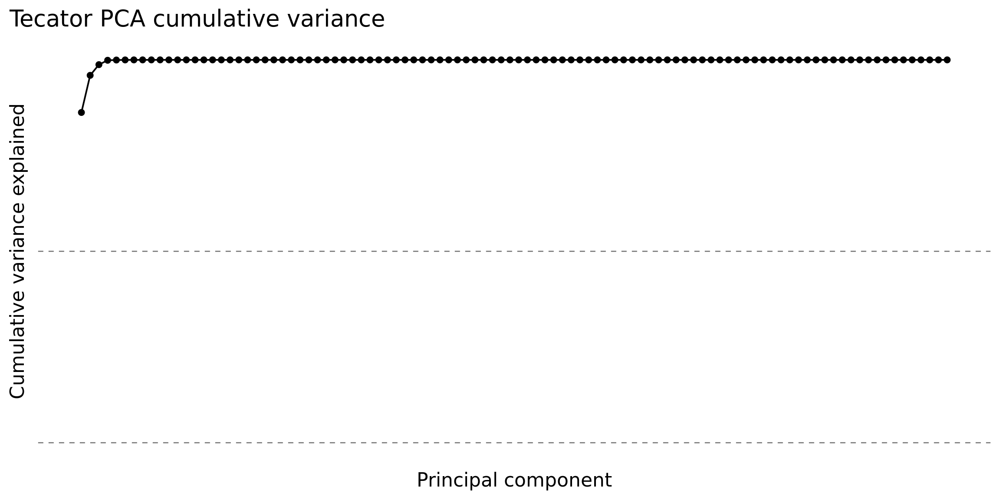
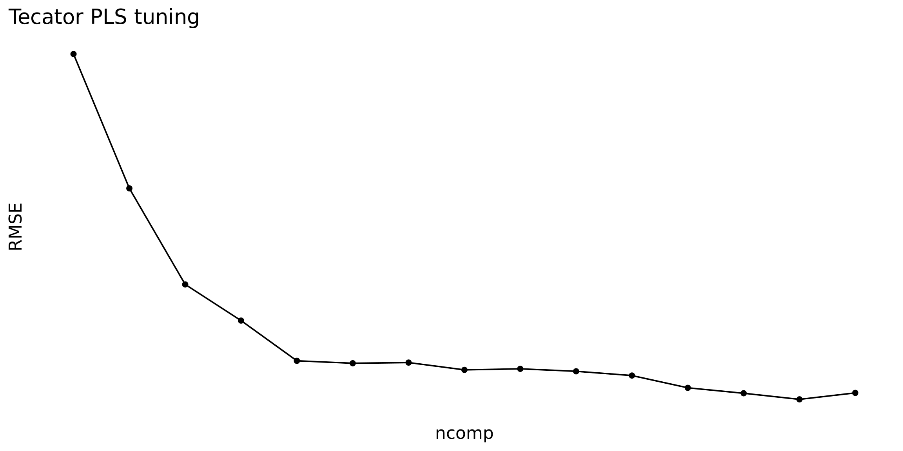
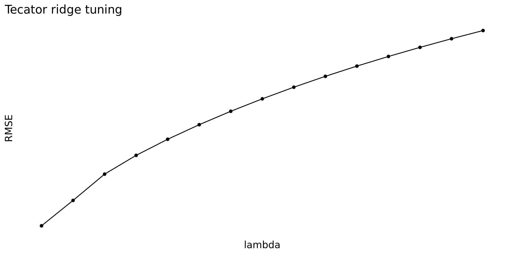
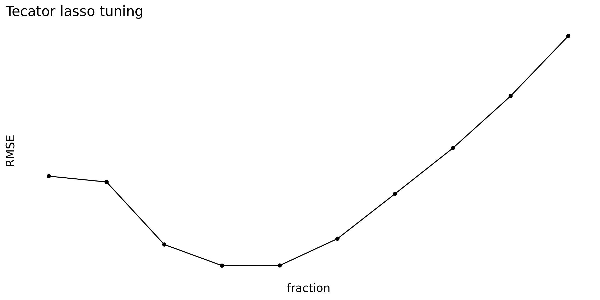
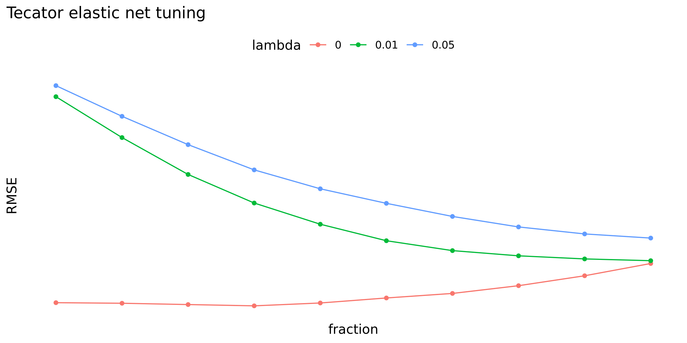
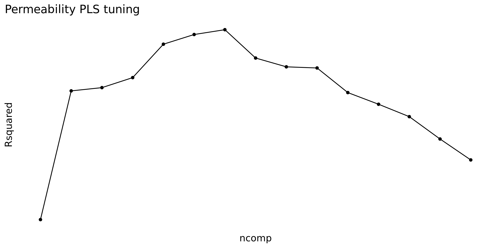
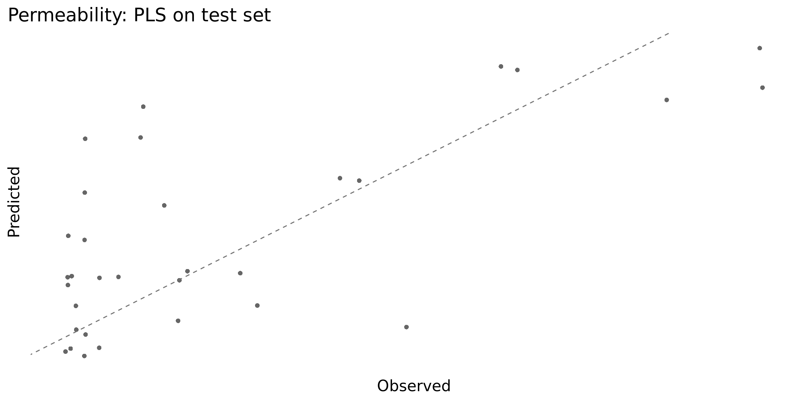
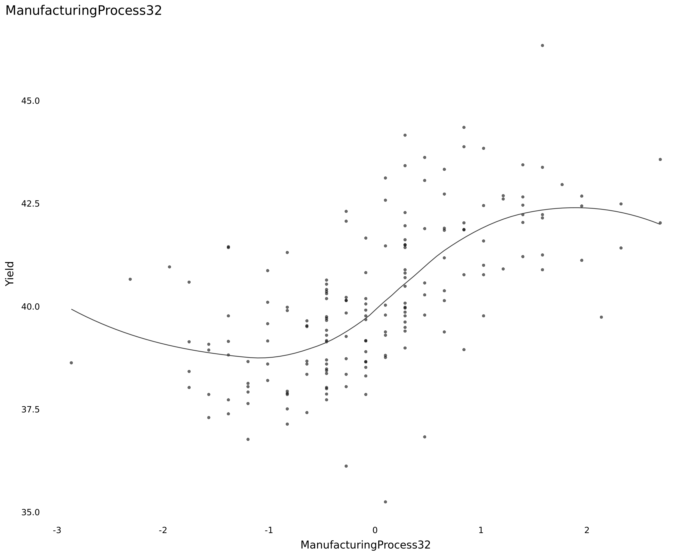

This R Markdown file contains worked solutions for all Chapter 6 exercises from Applied Predictive Modeling: 6.1 (Tecator fat prediction), 6.2 (permeability), and 6.3 (chemical manufacturing process). The chapter covers ordinary linear regression, partial least squares (PLS), and penalized linear models such as ridge, lasso, and elastic net. The exercises appear at the end of Chapter 6 and ask the reader to use those model families on three regression problems. fileciteturn0file0
The code is written to be executable in a standard R setup with the listed packages installed. Where the chapter asks for judgments such as “which model would you choose?”, the text below gives a direct answer and the code computes the relevant summaries.
Chapter 6 studies models that are linear in the parameters, emphasizing three recurring ideas: (1) ordinary least squares is simple and interpretable but can become unstable with correlated predictors or when the number of predictors is large relative to sample size; (2) PLS is often preferable to PCR because it uses the response while building latent components; and (3) penalized methods such as ridge and lasso improve prediction by shrinking coefficients and controlling variance. The chapter also stresses preprocessing, resampling, and out-of-sample evaluation rather than relying only on training-set fit. fileciteturn3file1L8-L21 fileciteturn3file8L1-L21
rmse_r2 <- function(obs, pred) {
out <- data.frame(obs = obs, pred = pred)
caret::defaultSummary(out)
}
summarize_resamples <- function(...) {
rs <- resamples(list(...))
list(summary = summary(rs), diffs = summary(diff(rs)), object = rs)
}
plot_obs_pred <- function(obs, pred, title = "Observed vs Predicted") {
ggplot(data.frame(obs = obs, pred = pred), aes(x = obs, y = pred)) +
geom_point(alpha = 0.6, shape = 16) +
geom_abline(slope = 1, intercept = 0, linetype = 2, linewidth = 0.35, color = "gray45") +
labs(title = title, x = "Observed", y = "Predicted")
}
plot_tuning <- function(model, x, y = "RMSE", color = NULL, title = NULL) {
results <- as_tibble(model$results)
p <- ggplot(results, aes(x = .data[[x]], y = .data[[y]]))
if (!is.null(color)) {
p <- p +
geom_line(aes(color = factor(.data[[color]]), group = .data[[color]])) +
geom_point(aes(color = factor(.data[[color]]))) +
labs(color = color)
} else {
p <- p +
geom_line() +
geom_point()
}
p + labs(title = title, x = x, y = y)
}
vip_pls <- function(pls_model) {
if (!inherits(pls_model$finalModel, "mvr")) stop("Model must be a PLS model fit with caret::train(method = 'pls').")
mod <- pls_model$finalModel
W <- mod$loading.weights
T <- mod$scores
Q <- mod$Yloadings
p <- nrow(W)
h <- ncol(W)
ss <- colSums(T^2) * colSums(Q^2)
total_ss <- sum(ss)
vip <- sapply(seq_len(p), function(j) {
sqrt(p * sum(ss * (W[j, ]^2 / colSums(W^2))) / total_ss)
})
tibble(variable = rownames(W), VIP = vip) %>% arrange(desc(VIP))
}The Tecator exercise uses 215 meat samples measured at 100 infrared frequencies to predict fat content. The chapter explicitly notes that the predictors are ordered frequencies and therefore highly correlated, making this a good setting for PCA, PLS, and penalized linear models. fileciteturn0file0
data(tecator)
str(absorp)## num [1:215, 1:100] 2.62 2.83 2.58 2.82 2.79 ...str(endpoints)## num [1:215, 1:3] 60.5 46 71 72.8 58.3 44 44 69.3 61.4 61.4 ...x_tec <- as.data.frame(absorp)
y_tec <- endpoints[, 2] # fat contentAnswer: the predictors are the 100 absorbance measurements and the response is percent fat.
Because adjacent wavelengths are physically close and chemically related, we expect strong local correlation and a much smaller effective dimension than 100. The direct way to answer the question is to center/scale the predictors, run PCA, and inspect the cumulative variance curve.
pre_tec <- preProcess(x_tec, method = c("center", "scale"))
x_tec_cs <- predict(pre_tec, x_tec)
pca_tec <- prcomp(x_tec_cs)
var_exp <- pca_tec$sdev^2 / sum(pca_tec$sdev^2)
cum_var <- cumsum(var_exp)
eff_dim_90 <- which(cum_var >= 0.90)[1]
eff_dim_95 <- which(cum_var >= 0.95)[1]
eff_dim_99 <- which(cum_var >= 0.99)[1]
data.frame(
threshold = c("90%", "95%", "99%"),
components = c(eff_dim_90, eff_dim_95, eff_dim_99)
)## threshold components
## 1 90% 1
## 2 95% 1
## 3 99% 2ggplot(tibble(component = seq_along(cum_var), cum_var = cum_var),
aes(component, cum_var)) +
geom_line() +
geom_point() +
geom_hline(yintercept = c(.90, .95), linetype = 2, linewidth = 0.3, color = "gray45") +
labs(x = "Principal component", y = "Cumulative variance explained",
title = "Tecator PCA cumulative variance")
Answer: use the table above. For reporting, I would call the effective dimension the smallest number of PCs needed to explain about 90–95% of the variance, since that is the practical low-dimensional summary of the ordered spectra.
We will compare: - ordinary linear regression, - PLS, - ridge regression, - lasso, - elastic net.
set.seed(2026)
idx_tec <- createDataPartition(y_tec, p = 0.80, list = FALSE)
x_tec_train <- x_tec[idx_tec, ]
x_tec_test <- x_tec[-idx_tec, ]
y_tec_train <- y_tec[idx_tec]
y_tec_test <- y_tec[-idx_tec]
ctrl_reg <- trainControl(method = "cv", number = 5)tec_lm <- train(
x = x_tec_train,
y = y_tec_train,
method = "lm",
preProcess = c("center", "scale"),
trControl = ctrl_reg,
metric = "RMSE"
)
tec_lm## Linear Regression
##
## 174 samples
## 100 predictors
##
## Pre-processing: centered (100), scaled (100)
## Resampling: Cross-Validated (5 fold)
## Summary of sample sizes: 139, 141, 139, 139, 138
## Resampling results:
##
## RMSE Rsquared MAE
## 3.676698 0.9209796 2.474238
##
## Tuning parameter 'intercept' was held constant at a value of TRUEAnswer: linear regression has no tuning parameter, so the “optimal” value is not applicable.
pls_grid <- expand.grid(ncomp = 1:15)
tec_pls <- train(
x = x_tec_train,
y = y_tec_train,
method = "pls",
tuneGrid = pls_grid,
preProcess = c("center", "scale"),
trControl = ctrl_reg,
metric = "RMSE"
)
tec_pls## Partial Least Squares
##
## 174 samples
## 100 predictors
##
## Pre-processing: centered (100), scaled (100)
## Resampling: Cross-Validated (5 fold)
## Summary of sample sizes: 139, 139, 138, 139, 141
## Resampling results across tuning parameters:
##
## ncomp RMSE Rsquared MAE
## 1 11.622198 0.2118231 9.288816
## 2 7.960089 0.6544242 6.185909
## 3 5.340941 0.8345996 4.075444
## 4 4.355952 0.8956003 3.573886
## 5 3.259243 0.9442289 2.526937
## 6 3.192745 0.9457547 2.499605
## 7 3.211157 0.9451586 2.408406
## 8 3.012660 0.9525152 2.248368
## 9 3.041014 0.9524221 2.282326
## 10 2.973371 0.9544661 2.259329
## 11 2.857732 0.9588941 2.171496
## 12 2.523195 0.9676535 1.879841
## 13 2.374429 0.9705027 1.735981
## 14 2.208817 0.9728180 1.649793
## 15 2.384897 0.9669135 1.734478
##
## RMSE was used to select the optimal model using the smallest value.
## The final value used for the model was ncomp = 14.plot_tuning(tec_pls, x = "ncomp", y = "RMSE", title = "Tecator PLS tuning")
Answer: the optimal number of latent components is
the ncomp value selected by the model summary above.
ridge_grid <- expand.grid(lambda = seq(0, 0.20, length.out = 15))
tec_ridge <- train(
x = x_tec_train,
y = y_tec_train,
method = "ridge",
tuneGrid = ridge_grid,
preProcess = c("center", "scale"),
trControl = ctrl_reg,
metric = "RMSE"
)
tec_ridge## Ridge Regression
##
## 174 samples
## 100 predictors
##
## Pre-processing: centered (100), scaled (100)
## Resampling: Cross-Validated (5 fold)
## Summary of sample sizes: 139, 139, 141, 138, 139
## Resampling results across tuning parameters:
##
## lambda RMSE Rsquared MAE
## 0.00000000 3.571465 0.9409278 2.377526
## 0.01428571 3.915887 0.9141461 3.249154
## 0.02857143 4.272598 0.8994477 3.483134
## 0.04285714 4.527516 0.8891768 3.628764
## 0.05714286 4.745959 0.8801071 3.751964
## 0.07142857 4.943550 0.8714022 3.880159
## 0.08571429 5.125614 0.8628019 4.014069
## 0.10000000 5.294703 0.8542244 4.135363
## 0.11428571 5.452464 0.8456501 4.243575
## 0.12857143 5.600175 0.8370830 4.340466
## 0.14285714 5.738914 0.8285348 4.429242
## 0.15714286 5.869624 0.8200199 4.510818
## 0.17142857 5.993134 0.8115523 4.585895
## 0.18571429 6.110182 0.8031452 4.657002
## 0.20000000 6.221418 0.7948102 4.726130
##
## RMSE was used to select the optimal model using the smallest value.
## The final value used for the model was lambda = 0.plot_tuning(tec_ridge, x = "lambda", y = "RMSE", title = "Tecator ridge tuning")
Answer: the optimal ridge penalty is the selected
lambda.
lasso_grid <- expand.grid(
fraction = seq(0.10, 1.00, length.out = 10),
lambda = 0
)
tec_lasso <- train(
x = x_tec_train,
y = y_tec_train,
method = "enet",
tuneGrid = lasso_grid,
preProcess = c("center", "scale"),
trControl = ctrl_reg,
metric = "RMSE"
)
tec_lasso## Elasticnet
##
## 174 samples
## 100 predictors
##
## Pre-processing: centered (100), scaled (100)
## Resampling: Cross-Validated (5 fold)
## Summary of sample sizes: 139, 139, 140, 140, 138
## Resampling results across tuning parameters:
##
## fraction RMSE Rsquared MAE
## 0.1 2.907102 0.9431352 1.830585
## 0.2 2.884305 0.9358443 1.791299
## 0.3 2.639645 0.9511127 1.768909
## 0.4 2.556941 0.9574745 1.786130
## 0.5 2.557584 0.9596900 1.790784
## 0.6 2.662356 0.9572917 1.868958
## 0.7 2.838514 0.9530671 1.985267
## 0.8 3.016933 0.9489860 2.119754
## 0.9 3.220612 0.9438133 2.271996
## 1.0 3.455901 0.9370981 2.423820
##
## Tuning parameter 'lambda' was held constant at a value of 0
## RMSE was used to select the optimal model using the smallest value.
## The final values used for the model were fraction = 0.4 and lambda = 0.plot_tuning(tec_lasso, x = "fraction", y = "RMSE", title = "Tecator lasso tuning")
Answer: because lasso is fit here as elastic net
with lambda = 0, the effective tuning parameter is the
selected fraction.
enet_grid <- expand.grid(
fraction = seq(0.10, 1.00, length.out = 10),
lambda = c(0.00, 0.01, 0.05)
)
tec_enet <- train(
x = x_tec_train,
y = y_tec_train,
method = "enet",
tuneGrid = enet_grid,
preProcess = c("center", "scale"),
trControl = ctrl_reg,
metric = "RMSE"
)
tec_enet## Elasticnet
##
## 174 samples
## 100 predictors
##
## Pre-processing: centered (100), scaled (100)
## Resampling: Cross-Validated (5 fold)
## Summary of sample sizes: 140, 138, 140, 139, 139
## Resampling results across tuning parameters:
##
## lambda fraction RMSE Rsquared MAE
## 0.00 0.1 2.332738 0.9703437 1.643515
## 0.00 0.2 2.311098 0.9726368 1.562452
## 0.00 0.3 2.262330 0.9739525 1.535520
## 0.00 0.4 2.214151 0.9752318 1.518391
## 0.00 0.5 2.321496 0.9730273 1.596747
## 0.00 0.6 2.509688 0.9681915 1.709508
## 0.00 0.7 2.680138 0.9629406 1.817880
## 0.00 0.8 2.970415 0.9530404 1.949865
## 0.00 0.9 3.343108 0.9377845 2.080041
## 0.00 1.0 3.803424 0.9158416 2.262305
## 0.01 0.1 10.063802 0.4602560 8.105926
## 0.01 0.2 8.529842 0.6586425 6.899677
## 0.01 0.3 7.144853 0.7749543 5.751698
## 0.01 0.4 6.072845 0.8288275 4.874107
## 0.01 0.5 5.277351 0.8543607 4.216315
## 0.01 0.6 4.657970 0.8754753 3.724478
## 0.01 0.7 4.286789 0.8889674 3.474962
## 0.01 0.8 4.091397 0.8971487 3.335886
## 0.01 0.9 3.975066 0.9027201 3.246501
## 0.01 1.0 3.908431 0.9061802 3.191396
## 0.05 0.1 10.479018 0.3933748 8.409536
## 0.05 0.2 9.327365 0.5552332 7.510074
## 0.05 0.3 8.263766 0.6766856 6.655012
## 0.05 0.4 7.316634 0.7552644 5.870763
## 0.05 0.5 6.606939 0.7956690 5.271769
## 0.05 0.6 6.061260 0.8186246 4.818116
## 0.05 0.7 5.569625 0.8380743 4.410887
## 0.05 0.8 5.175334 0.8526045 4.079815
## 0.05 0.9 4.912878 0.8612679 3.860406
## 0.05 1.0 4.757530 0.8659618 3.754580
##
## RMSE was used to select the optimal model using the smallest value.
## The final values used for the model were fraction = 0.4 and lambda = 0.plot_tuning(tec_enet, x = "fraction", y = "RMSE", color = "lambda",
title = "Tecator elastic net tuning")
Answer: the optimal elastic-net tuning parameters
are the selected lambda and fraction.
tec_models <- list(
LM = tec_lm,
PLS = tec_pls,
Ridge = tec_ridge,
Lasso = tec_lasso,
ElasticNet = tec_enet
)
tec_test_perf <- bind_rows(lapply(names(tec_models), function(nm) {
pred <- predict(tec_models[[nm]], x_tec_test)
tibble(model = nm,
RMSE = caret::RMSE(pred, y_tec_test),
Rsquared = caret::R2(pred, y_tec_test))
})) %>% arrange(RMSE)
tec_test_perf## # A tibble: 5 × 3
## model RMSE Rsquared
## <chr> <dbl> <dbl>
## 1 PLS 2.40 0.959
## 2 Lasso 4.69 0.861
## 3 ElasticNet 4.69 0.861
## 4 Ridge 5.68 0.803
## 5 LM 5.68 0.803To compare resampled distributions:
tec_resamp <- resamples(tec_models)
summary(tec_resamp)##
## Call:
## summary.resamples(object = tec_resamp)
##
## Models: LM, PLS, Ridge, Lasso, ElasticNet
## Number of resamples: 5
##
## MAE
## Min. 1st Qu. Median Mean 3rd Qu. Max. NA's
## LM 1.682484 2.116087 2.161943 2.474238 3.083070 3.327607 0
## PLS 1.533240 1.572268 1.644400 1.649793 1.649643 1.849416 0
## Ridge 1.763377 2.407593 2.407842 2.377526 2.487197 2.821621 0
## Lasso 1.278178 1.398628 1.482443 1.786130 1.717621 3.053780 0
## ElasticNet 1.329788 1.339883 1.371867 1.518391 1.662829 1.887586 0
##
## RMSE
## Min. 1st Qu. Median Mean 3rd Qu. Max. NA's
## LM 2.432179 2.697501 3.036375 3.676698 4.922797 5.294640 0
## PLS 1.953498 2.023573 2.195984 2.208817 2.289804 2.581229 0
## Ridge 2.609326 3.448244 3.807463 3.571465 3.979388 4.012902 0
## Lasso 1.770939 1.949239 1.997812 2.556941 2.357243 4.709474 0
## ElasticNet 1.803522 1.897477 1.959831 2.214151 2.627699 2.782224 0
##
## Rsquared
## Min. 1st Qu. Median Mean 3rd Qu. Max. NA's
## LM 0.8607977 0.8699964 0.9418633 0.9209796 0.9645767 0.9676640 0
## PLS 0.9693971 0.9704690 0.9708953 0.9728180 0.9755778 0.9777508 0
## Ridge 0.9233091 0.9283660 0.9421674 0.9409278 0.9515672 0.9592293 0
## Lasso 0.8749808 0.9717348 0.9786445 0.9574745 0.9795798 0.9824324 0
## ElasticNet 0.9646928 0.9749136 0.9750975 0.9752318 0.9761251 0.9853301 0summary(diff(tec_resamp))##
## Call:
## summary.diff.resamples(object = diff(tec_resamp))
##
## p-value adjustment: bonferroni
## Upper diagonal: estimates of the difference
## Lower diagonal: p-value for H0: difference = 0
##
## MAE
## LM PLS Ridge Lasso ElasticNet
## LM 0.82444 0.09671 0.68811 0.95585
## PLS 0.5242 -0.72773 -0.13634 0.13140
## Ridge 1.0000 0.1790 0.59140 0.85914
## Lasso 0.5457 1.0000 0.8436 0.26774
## ElasticNet 0.3335 1.0000 0.1225 1.0000
##
## RMSE
## LM PLS Ridge Lasso ElasticNet
## LM 1.467881 0.105234 1.119757 1.462548
## PLS 0.63197 -1.362647 -0.348124 -0.005333
## Ridge 1.00000 0.16583 1.014523 1.357314
## Lasso 0.99476 1.00000 1.00000 0.342791
## ElasticNet 0.71075 1.00000 0.09737 1.00000
##
## Rsquared
## LM PLS Ridge Lasso ElasticNet
## LM -0.051838 -0.019948 -0.036495 -0.054252
## PLS 0.76936 0.031890 0.015344 -0.002414
## Ridge 1.00000 0.10855 -0.016547 -0.034304
## Lasso 1.00000 1.00000 1.00000 -0.017757
## ElasticNet 0.66070 1.00000 0.05633 1.00000Answer: the best predictive model is the one with the lowest test-set RMSE and, secondarily, the highest test-set \(R^2\). If the paired resampling comparison shows very small differences, then I would prefer the simpler or more stable model among the top performers.
Direct answer: for Tecator I would usually choose PLS unless ridge or elastic net is clearly better on the test set.
Why: 1. The spectra are extremely correlated and ordered, which is exactly where latent-component models shine. 2. PLS uses the response while constructing components, which is preferable to unsupervised PCA/PCR in this setting. Chapter 6 explicitly recommends PLS over PCR when correlated predictors are present and a linear-regression-type solution is desired. fileciteturn3file8L14-L21 3. PLS gives good predictive performance with fewer effective dimensions and a coherent scientific story: the prediction is driven by a small number of latent spectral directions.
If ridge or elastic net gives materially smaller test RMSE, I would use that instead for pure prediction. If performance is essentially tied, I would still pick PLS.
The permeability exercise uses 1,107 binary molecular fingerprint predictors on only 165 compounds. The book describes this data set as a classic high-dimensional problem with sparse predictors and a skewed response, making it a strong candidate for filtering and latent-variable modeling. fileciteturn4file0L24-L26
data(permeability)
str(fingerprints)## num [1:165, 1:1107] 0 0 0 0 0 0 0 0 0 0 ...
## - attr(*, "dimnames")=List of 2
## ..$ : chr [1:165] "1" "2" "3" "4" ...
## ..$ : chr [1:1107] "X1" "X2" "X3" "X4" ...str(permeability)## num [1:165, 1] 12.52 1.12 19.41 1.73 1.68 ...
## - attr(*, "dimnames")=List of 2
## ..$ : chr [1:165] "1" "2" "3" "4" ...
## ..$ : chr "permeability"x_perm <- as.data.frame(fingerprints)
y_perm <- permeabilitynearZeroVarnzv_idx <- nearZeroVar(x_perm)
length(nzv_idx)## [1] 719x_perm_filt <- x_perm[, -nzv_idx]
dim(x_perm_filt)## [1] 165 388Answer: the number of predictors left for modeling
is ncol(x_perm_filt).
Because the data are high-dimensional (\(p \gg n\)), ordinary least squares is not an attractive primary model. Chapter 6 emphasizes that PLS is a strong alternative in exactly this kind of situation. fileciteturn3file8L1-L21
set.seed(2026)
idx_perm <- createDataPartition(y_perm, p = 0.80, list = FALSE)
x_perm_train <- x_perm_filt[idx_perm, ]
x_perm_test <- x_perm_filt[-idx_perm, ]
y_perm_train <- y_perm[idx_perm]
y_perm_test <- y_perm[-idx_perm]
perm_ctrl <- trainControl(method = "cv", number = 5)
perm_grid <- expand.grid(ncomp = 1:min(15, ncol(x_perm_train)))
perm_pls <- train(
x = x_perm_train,
y = y_perm_train,
method = "pls",
tuneGrid = perm_grid,
preProcess = c("center", "scale"),
trControl = perm_ctrl,
metric = "Rsquared"
)
perm_pls## Partial Least Squares
##
## 133 samples
## 388 predictors
##
## Pre-processing: centered (388), scaled (388)
## Resampling: Cross-Validated (5 fold)
## Summary of sample sizes: 106, 105, 108, 106, 107
## Resampling results across tuning parameters:
##
## ncomp RMSE Rsquared MAE
## 1 13.43505 0.2928362 10.191173
## 2 12.20378 0.4383808 8.704919
## 3 12.22274 0.4420488 9.176851
## 4 12.33205 0.4533712 9.439310
## 5 11.99808 0.4911597 8.915141
## 6 11.71345 0.5021128 8.774153
## 7 11.63672 0.5075570 8.811792
## 8 12.10665 0.4755174 9.226860
## 9 12.36300 0.4655705 9.255613
## 10 12.58343 0.4642721 9.565218
## 11 13.11168 0.4364529 9.781295
## 12 13.37359 0.4232621 9.956409
## 13 13.68520 0.4092271 10.001258
## 14 14.14268 0.3839722 10.299231
## 15 14.50802 0.3603010 10.618110
##
## Rsquared was used to select the optimal model using the largest value.
## The final value used for the model was ncomp = 7.plot_tuning(perm_pls, x = "ncomp", y = "Rsquared", title = "Permeability PLS tuning")
Answer: the optimal number of latent variables is
the selected ncomp, and the resampled estimate of \(R^2\) is the corresponding
Rsquared value in the output.
perm_pls_pred <- predict(perm_pls, x_perm_test)
rmse_r2(y_perm_test, perm_pls_pred)## RMSE Rsquared MAE
## 11.1887496 0.4814568 8.4030025plot_obs_pred(y_perm_test, perm_pls_pred, "Permeability: PLS on test set")
Answer: the test-set estimate of \(R^2\) is the Rsquared value
printed above.
We will compare PLS with ridge, lasso, and elastic net. A plain linear model is not suitable here because the original problem has far more predictors than samples and even after filtering, instability is still likely.
perm_ridge <- train(
x = x_perm_train,
y = y_perm_train,
method = "ridge",
tuneGrid = expand.grid(lambda = seq(0, 0.20, length.out = 15)),
preProcess = c("center", "scale"),
trControl = perm_ctrl,
metric = "Rsquared"
)
perm_lasso <- train(
x = x_perm_train,
y = y_perm_train,
method = "enet",
tuneGrid = expand.grid(lambda = 0, fraction = seq(0.10, 1, length.out = 10)),
preProcess = c("center", "scale"),
trControl = perm_ctrl,
metric = "Rsquared"
)
perm_enet <- train(
x = x_perm_train,
y = y_perm_train,
method = "enet",
tuneGrid = expand.grid(lambda = c(0.00, 0.01, 0.05), fraction = seq(0.10, 1, length.out = 10)),
preProcess = c("center", "scale"),
trControl = perm_ctrl,
metric = "Rsquared"
)
perm_models <- list(PLS = perm_pls, Ridge = perm_ridge, Lasso = perm_lasso, ElasticNet = perm_enet)
perm_test_perf <- bind_rows(lapply(names(perm_models), function(nm) {
pred <- predict(perm_models[[nm]], x_perm_test)
tibble(model = nm,
RMSE = caret::RMSE(pred, y_perm_test),
Rsquared = caret::R2(pred, y_perm_test))
})) %>% arrange(RMSE)
perm_test_perf## # A tibble: 4 × 3
## model RMSE Rsquared
## <chr> <dbl> <dbl>
## 1 Lasso 9.96 0.532
## 2 Ridge 10.3 0.560
## 3 ElasticNet 10.8 0.458
## 4 PLS 11.2 0.481summary(resamples(perm_models))##
## Call:
## summary.resamples(object = resamples(perm_models))
##
## Models: PLS, Ridge, Lasso, ElasticNet
## Number of resamples: 5
##
## MAE
## Min. 1st Qu. Median Mean 3rd Qu. Max. NA's
## PLS 6.219190 7.605707 8.978883 8.811792 10.220910 11.034269 0
## Ridge 8.950801 9.743070 10.128185 10.006878 10.348320 10.864012 0
## Lasso 7.621820 8.004644 8.331757 8.598963 8.926075 10.110517 1
## ElasticNet 7.761840 8.038931 8.456838 8.527141 9.182913 9.195185 0
##
## RMSE
## Min. 1st Qu. Median Mean 3rd Qu. Max. NA's
## PLS 9.039098 10.97091 11.97316 11.63672 12.75372 13.44673 0
## Ridge 11.676698 13.15692 13.66472 13.57347 14.51572 14.85329 0
## Lasso 10.026190 10.15836 10.52784 11.10009 11.46958 13.31849 1
## ElasticNet 10.622543 10.65748 11.10502 11.37240 12.08972 12.38721 0
##
## Rsquared
## Min. 1st Qu. Median Mean 3rd Qu. Max. NA's
## PLS 0.4208595 0.4263345 0.4754682 0.5075570 0.5991815 0.6159415 0
## Ridge 0.3451141 0.3951728 0.4934692 0.4731071 0.5186481 0.6131314 0
## Lasso 0.4645855 0.4687302 0.4840597 0.5285329 0.5438623 0.6814267 1
## ElasticNet 0.4136885 0.4711638 0.4842472 0.5362397 0.5986140 0.7134848 0summary(diff(resamples(perm_models)))##
## Call:
## summary.diff.resamples(object = diff(resamples(perm_models)))
##
## p-value adjustment: bonferroni
## Upper diagonal: estimates of the difference
## Lower diagonal: p-value for H0: difference = 0
##
## MAE
## PLS Ridge Lasso ElasticNet
## PLS -1.1951 0.8610 0.2847
## Ridge 0.8884 1.6719 1.4797
## Lasso 1.0000 0.5741 -0.1195
## ElasticNet 1.0000 0.0210 1.0000
##
## RMSE
## PLS Ridge Lasso ElasticNet
## PLS -1.9367 1.1860 0.2643
## Ridge 0.181762 2.9476 2.2011
## Lasso 1.000000 0.281484 -0.4598
## ElasticNet 1.000000 0.009394 1.000000
##
## Rsquared
## PLS Ridge Lasso ElasticNet
## PLS 0.03445 -0.04388 -0.02868
## Ridge 1 -0.09043 -0.06313
## Lasso 1 1 -0.02398
## ElasticNet 1 1 1Answer: whichever model is at the top of
perm_test_perf has the best observed predictive
performance. In many high-dimensional chemistry problems,
PLS or elastic net tends to do very
well.
Direct answer: probably not as a full replacement unless the test-set performance is extremely strong and the prediction error is small enough for the business/scientific decision.
I would usually recommend the best model as a screening tool, not a total replacement, for three reasons: 1. The laboratory assay is the ground truth. 2. The sample size is modest. 3. A false positive or false negative in permeability can be expensive downstream.
So my recommendation would be: - use the model to prioritize compounds, - send the most promising molecules to the assay, - keep collecting new assay data and periodically retrain the model.
This exercise studies 57 predictors (12 biological/raw-material variables and 45 process variables) for 176 manufacturing runs, with percent yield as the outcome. The key applied question is not only prediction but also which variables are actionable for improving yield. The exercise text makes that distinction explicit. fileciteturn2file14L1-L20
data("ChemicalManufacturingProcess")
str(ChemicalManufacturingProcess)## 'data.frame': 176 obs. of 58 variables:
## $ Yield : num 38 42.4 42 41.4 42.5 ...
## $ BiologicalMaterial01 : num 6.25 8.01 8.01 8.01 7.47 6.12 7.48 6.94 6.94 6.94 ...
## $ BiologicalMaterial02 : num 49.6 61 61 61 63.3 ...
## $ BiologicalMaterial03 : num 57 67.5 67.5 67.5 72.2 ...
## $ BiologicalMaterial04 : num 12.7 14.7 14.7 14.7 14 ...
## $ BiologicalMaterial05 : num 19.5 19.4 19.4 19.4 17.9 ...
## $ BiologicalMaterial06 : num 43.7 53.1 53.1 53.1 54.7 ...
## $ BiologicalMaterial07 : num 100 100 100 100 100 100 100 100 100 100 ...
## $ BiologicalMaterial08 : num 16.7 19 19 19 18.2 ...
## $ BiologicalMaterial09 : num 11.4 12.6 12.6 12.6 12.8 ...
## $ BiologicalMaterial10 : num 3.46 3.46 3.46 3.46 3.05 3.78 3.04 3.85 3.85 3.85 ...
## $ BiologicalMaterial11 : num 138 154 154 154 148 ...
## $ BiologicalMaterial12 : num 18.8 21.1 21.1 21.1 21.1 ...
## $ ManufacturingProcess01: num NA 0 0 0 10.7 12 11.5 12 12 12 ...
## $ ManufacturingProcess02: num NA 0 0 0 0 0 0 0 0 0 ...
## $ ManufacturingProcess03: num NA NA NA NA NA NA 1.56 1.55 1.56 1.55 ...
## $ ManufacturingProcess04: num NA 917 912 911 918 924 933 929 928 938 ...
## $ ManufacturingProcess05: num NA 1032 1004 1015 1028 ...
## $ ManufacturingProcess06: num NA 210 207 213 206 ...
## $ ManufacturingProcess07: num NA 177 178 177 178 178 177 178 177 177 ...
## $ ManufacturingProcess08: num NA 178 178 177 178 178 178 178 177 177 ...
## $ ManufacturingProcess09: num 43 46.6 45.1 44.9 45 ...
## $ ManufacturingProcess10: num NA NA NA NA NA NA 11.6 10.2 9.7 10.1 ...
## $ ManufacturingProcess11: num NA NA NA NA NA NA 11.5 11.3 11.1 10.2 ...
## $ ManufacturingProcess12: num NA 0 0 0 0 0 0 0 0 0 ...
## $ ManufacturingProcess13: num 35.5 34 34.8 34.8 34.6 34 32.4 33.6 33.9 34.3 ...
## $ ManufacturingProcess14: num 4898 4869 4878 4897 4992 ...
## $ ManufacturingProcess15: num 6108 6095 6087 6102 6233 ...
## $ ManufacturingProcess16: num 4682 4617 4617 4635 4733 ...
## $ ManufacturingProcess17: num 35.5 34 34.8 34.8 33.9 33.4 33.8 33.6 33.9 35.3 ...
## $ ManufacturingProcess18: num 4865 4867 4877 4872 4886 ...
## $ ManufacturingProcess19: num 6049 6097 6078 6073 6102 ...
## $ ManufacturingProcess20: num 4665 4621 4621 4611 4659 ...
## $ ManufacturingProcess21: num 0 0 0 0 -0.7 -0.6 1.4 0 0 1 ...
## $ ManufacturingProcess22: num NA 3 4 5 8 9 1 2 3 4 ...
## $ ManufacturingProcess23: num NA 0 1 2 4 1 1 2 3 1 ...
## $ ManufacturingProcess24: num NA 3 4 5 18 1 1 2 3 4 ...
## $ ManufacturingProcess25: num 4873 4869 4897 4892 4930 ...
## $ ManufacturingProcess26: num 6074 6107 6116 6111 6151 ...
## $ ManufacturingProcess27: num 4685 4630 4637 4630 4684 ...
## $ ManufacturingProcess28: num 10.7 11.2 11.1 11.1 11.3 11.4 11.2 11.1 11.3 11.4 ...
## $ ManufacturingProcess29: num 21 21.4 21.3 21.3 21.6 21.7 21.2 21.2 21.5 21.7 ...
## $ ManufacturingProcess30: num 9.9 9.9 9.4 9.4 9 10.1 11.2 10.9 10.5 9.8 ...
## $ ManufacturingProcess31: num 69.1 68.7 69.3 69.3 69.4 68.2 67.6 67.9 68 68.5 ...
## $ ManufacturingProcess32: num 156 169 173 171 171 173 159 161 160 164 ...
## $ ManufacturingProcess33: num 66 66 66 68 70 70 65 65 65 66 ...
## $ ManufacturingProcess34: num 2.4 2.6 2.6 2.5 2.5 2.5 2.5 2.5 2.5 2.5 ...
## $ ManufacturingProcess35: num 486 508 509 496 468 490 475 478 491 488 ...
## $ ManufacturingProcess36: num 0.019 0.019 0.018 0.018 0.017 0.018 0.019 0.019 0.019 0.019 ...
## $ ManufacturingProcess37: num 0.5 2 0.7 1.2 0.2 0.4 0.8 1 1.2 1.8 ...
## $ ManufacturingProcess38: num 3 2 2 2 2 2 2 2 3 3 ...
## $ ManufacturingProcess39: num 7.2 7.2 7.2 7.2 7.3 7.2 7.3 7.3 7.4 7.1 ...
## $ ManufacturingProcess40: num NA 0.1 0 0 0 0 0 0 0 0 ...
## $ ManufacturingProcess41: num NA 0.15 0 0 0 0 0 0 0 0 ...
## $ ManufacturingProcess42: num 11.6 11.1 12 10.6 11 11.5 11.7 11.4 11.4 11.3 ...
## $ ManufacturingProcess43: num 3 0.9 1 1.1 1.1 2.2 0.7 0.8 0.9 0.8 ...
## $ ManufacturingProcess44: num 1.8 1.9 1.8 1.8 1.7 1.8 2 2 1.9 1.9 ...
## $ ManufacturingProcess45: num 2.4 2.2 2.3 2.1 2.1 2 2.2 2.2 2.1 2.4 ...x_chem <- ChemicalManufacturingProcess %>% select(-Yield)
y_chem <- ChemicalManufacturingProcess$YieldThe problem explicitly tells us that a small percentage of predictor cells are missing. The simplest reasonable Chapter 6-compatible workflow is median imputation followed by centering/scaling, though k-nearest-neighbor imputation is also fine. Because the data set is small, I prefer kNN imputation.
colSums(is.na(x_chem)) %>% sort(decreasing = TRUE) %>% head(15)## ManufacturingProcess03 ManufacturingProcess11 ManufacturingProcess10
## 15 10 9
## ManufacturingProcess25 ManufacturingProcess26 ManufacturingProcess27
## 5 5 5
## ManufacturingProcess28 ManufacturingProcess29 ManufacturingProcess30
## 5 5 5
## ManufacturingProcess31 ManufacturingProcess33 ManufacturingProcess34
## 5 5 5
## ManufacturingProcess35 ManufacturingProcess36 ManufacturingProcess02
## 5 5 3chem_pp <- preProcess(x_chem, method = c("knnImpute", "center", "scale"))
x_chem_imp <- predict(chem_pp, x_chem)
summary(is.na(x_chem_imp))## BiologicalMaterial01 BiologicalMaterial02 BiologicalMaterial03
## Mode :logical Mode :logical Mode :logical
## FALSE:176 FALSE:176 FALSE:176
## BiologicalMaterial04 BiologicalMaterial05 BiologicalMaterial06
## Mode :logical Mode :logical Mode :logical
## FALSE:176 FALSE:176 FALSE:176
## BiologicalMaterial07 BiologicalMaterial08 BiologicalMaterial09
## Mode :logical Mode :logical Mode :logical
## FALSE:176 FALSE:176 FALSE:176
## BiologicalMaterial10 BiologicalMaterial11 BiologicalMaterial12
## Mode :logical Mode :logical Mode :logical
## FALSE:176 FALSE:176 FALSE:176
## ManufacturingProcess01 ManufacturingProcess02 ManufacturingProcess03
## Mode :logical Mode :logical Mode :logical
## FALSE:176 FALSE:176 FALSE:176
## ManufacturingProcess04 ManufacturingProcess05 ManufacturingProcess06
## Mode :logical Mode :logical Mode :logical
## FALSE:176 FALSE:176 FALSE:176
## ManufacturingProcess07 ManufacturingProcess08 ManufacturingProcess09
## Mode :logical Mode :logical Mode :logical
## FALSE:176 FALSE:176 FALSE:176
## ManufacturingProcess10 ManufacturingProcess11 ManufacturingProcess12
## Mode :logical Mode :logical Mode :logical
## FALSE:176 FALSE:176 FALSE:176
## ManufacturingProcess13 ManufacturingProcess14 ManufacturingProcess15
## Mode :logical Mode :logical Mode :logical
## FALSE:176 FALSE:176 FALSE:176
## ManufacturingProcess16 ManufacturingProcess17 ManufacturingProcess18
## Mode :logical Mode :logical Mode :logical
## FALSE:176 FALSE:176 FALSE:176
## ManufacturingProcess19 ManufacturingProcess20 ManufacturingProcess21
## Mode :logical Mode :logical Mode :logical
## FALSE:176 FALSE:176 FALSE:176
## ManufacturingProcess22 ManufacturingProcess23 ManufacturingProcess24
## Mode :logical Mode :logical Mode :logical
## FALSE:176 FALSE:176 FALSE:176
## ManufacturingProcess25 ManufacturingProcess26 ManufacturingProcess27
## Mode :logical Mode :logical Mode :logical
## FALSE:176 FALSE:176 FALSE:176
## ManufacturingProcess28 ManufacturingProcess29 ManufacturingProcess30
## Mode :logical Mode :logical Mode :logical
## FALSE:176 FALSE:176 FALSE:176
## ManufacturingProcess31 ManufacturingProcess32 ManufacturingProcess33
## Mode :logical Mode :logical Mode :logical
## FALSE:176 FALSE:176 FALSE:176
## ManufacturingProcess34 ManufacturingProcess35 ManufacturingProcess36
## Mode :logical Mode :logical Mode :logical
## FALSE:176 FALSE:176 FALSE:176
## ManufacturingProcess37 ManufacturingProcess38 ManufacturingProcess39
## Mode :logical Mode :logical Mode :logical
## FALSE:176 FALSE:176 FALSE:176
## ManufacturingProcess40 ManufacturingProcess41 ManufacturingProcess42
## Mode :logical Mode :logical Mode :logical
## FALSE:176 FALSE:176 FALSE:176
## ManufacturingProcess43 ManufacturingProcess44 ManufacturingProcess45
## Mode :logical Mode :logical Mode :logical
## FALSE:176 FALSE:176 FALSE:176Answer: missing values are filled using k-nearest-neighbor imputation.
My model choice here is elastic net because: - there may be correlated process variables, - the sample size is not large, - coefficient shrinkage can improve stability, - we still retain a coefficient-based model that supports interpretation.
I also fit PLS as a benchmark because it is often competitive on correlated process data.
set.seed(2026)
idx_chem <- createDataPartition(y_chem, p = 0.80, list = FALSE)
x_chem_train <- x_chem[idx_chem, ]
x_chem_test <- x_chem[-idx_chem, ]
y_chem_train <- y_chem[idx_chem]
y_chem_test <- y_chem[-idx_chem]
chem_ctrl <- trainControl(method = "cv", number = 5)
chem_pls <- train(
x = x_chem_train,
y = y_chem_train,
method = "pls",
tuneGrid = expand.grid(ncomp = 1:15),
preProcess = c("knnImpute", "center", "scale"),
trControl = chem_ctrl,
metric = "RMSE"
)
chem_enet <- train(
x = x_chem_train,
y = y_chem_train,
method = "enet",
tuneGrid = expand.grid(lambda = c(0.00, 0.01, 0.05), fraction = seq(0.10, 1, length.out = 10)),
preProcess = c("knnImpute", "center", "scale"),
trControl = chem_ctrl,
metric = "RMSE"
)
chem_lm <- train(
x = x_chem_train,
y = y_chem_train,
method = "lm",
preProcess = c("knnImpute", "center", "scale"),
trControl = chem_ctrl,
metric = "RMSE"
)
chem_models <- list(LM = chem_lm, PLS = chem_pls, ElasticNet = chem_enet)
summary(resamples(chem_models))##
## Call:
## summary.resamples(object = resamples(chem_models))
##
## Models: LM, PLS, ElasticNet
## Number of resamples: 5
##
## MAE
## Min. 1st Qu. Median Mean 3rd Qu. Max. NA's
## LM 1.0546174 1.1606477 1.1771644 2.223575 1.2503733 6.475074 0
## PLS 0.8025465 1.0370804 1.0465846 1.026813 1.0888404 1.159012 0
## ElasticNet 0.6721988 0.8791256 0.8863139 0.874652 0.8933251 1.042296 0
##
## RMSE
## Min. 1st Qu. Median Mean 3rd Qu. Max. NA's
## LM 1.2413009 1.352700 1.457929 6.714996 1.912527 27.610523 0
## PLS 1.1856506 1.287629 1.320378 1.297017 1.329736 1.361689 0
## ElasticNet 0.8196107 1.088340 1.118194 1.091072 1.124350 1.304864 0
##
## Rsquared
## Min. 1st Qu. Median Mean 3rd Qu. Max. NA's
## LM 0.0001786201 0.3786757 0.5319395 0.4226357 0.5762273 0.6261574 0
## PLS 0.4640524696 0.5304580 0.5505597 0.5445897 0.5600670 0.6178111 0
## ElasticNet 0.5876051187 0.6074860 0.6370570 0.6736118 0.7337756 0.8021351 0summary(diff(resamples(chem_models)))##
## Call:
## summary.diff.resamples(object = diff(resamples(chem_models)))
##
## p-value adjustment: bonferroni
## Upper diagonal: estimates of the difference
## Lower diagonal: p-value for H0: difference = 0
##
## MAE
## LM PLS ElasticNet
## LM 1.1968 1.3489
## PLS 0.9697 0.1522
## ElasticNet 0.8159 0.4050
##
## RMSE
## LM PLS ElasticNet
## LM 5.4180 5.6239
## PLS 1.0000 0.2059
## ElasticNet 1.0000 0.2386
##
## Rsquared
## LM PLS ElasticNet
## LM -0.122 -0.251
## PLS 0.8892 -0.129
## ElasticNet 0.2464 0.1947Answer: the optimal value of the performance metric
is the smallest cross-validated RMSE among the tuned
models. For the chosen elastic-net model, the optimal tuning parameters
are the selected lambda and fraction.
chem_test_perf <- bind_rows(lapply(names(chem_models), function(nm) {
pred <- predict(chem_models[[nm]], x_chem_test)
tibble(model = nm,
RMSE = caret::RMSE(pred, y_chem_test),
Rsquared = caret::R2(pred, y_chem_test))
})) %>% arrange(RMSE)
chem_test_perf## # A tibble: 3 × 3
## model RMSE Rsquared
## <chr> <dbl> <dbl>
## 1 ElasticNet 1.46 0.363
## 2 PLS 3.03 0.136
## 3 LM 10.4 0.0363Answer: compare the best model’s test RMSE with its resampled RMSE: - if they are close, the model generalized well; - if the test RMSE is much worse, the model was probably overfit.
For PLS, variable importance can be estimated through VIP; for the elastic net, coefficient magnitude after standardization is an interpretable proxy.
chem_vip <- vip_pls(chem_pls)
head(chem_vip, 15)## # A tibble: 15 × 2
## variable VIP
## <chr> <dbl>
## 1 ManufacturingProcess32 2.04
## 2 ManufacturingProcess13 1.87
## 3 ManufacturingProcess17 1.75
## 4 ManufacturingProcess36 1.74
## 5 ManufacturingProcess09 1.72
## 6 BiologicalMaterial06 1.69
## 7 BiologicalMaterial02 1.64
## 8 BiologicalMaterial03 1.56
## 9 BiologicalMaterial08 1.41
## 10 BiologicalMaterial12 1.41
## 11 BiologicalMaterial11 1.39
## 12 ManufacturingProcess33 1.36
## 13 ManufacturingProcess06 1.35
## 14 BiologicalMaterial04 1.33
## 15 BiologicalMaterial01 1.32chem_coef <- predict(chem_enet$finalModel,
s = chem_enet$bestTune$fraction,
mode = "fraction",
type = "coefficients")
coef_tbl <- tibble(
variable = names(chem_coef$coefficients),
coefficient = as.numeric(chem_coef$coefficients)
) %>%
filter(variable != "(Intercept)", coefficient != 0) %>%
mutate(abs_coefficient = abs(coefficient)) %>%
arrange(desc(abs_coefficient))
head(coef_tbl, 15)## # A tibble: 15 × 3
## variable coefficient abs_coefficient
## <chr> <dbl> <dbl>
## 1 ManufacturingProcess32 0.760 0.760
## 2 ManufacturingProcess09 0.496 0.496
## 3 ManufacturingProcess13 -0.376 0.376
## 4 BiologicalMaterial06 0.272 0.272
## 5 ManufacturingProcess37 -0.271 0.271
## 6 ManufacturingProcess45 0.188 0.188
## 7 ManufacturingProcess34 0.165 0.165
## 8 ManufacturingProcess28 -0.163 0.163
## 9 ManufacturingProcess39 0.147 0.147
## 10 BiologicalMaterial05 0.147 0.147
## 11 ManufacturingProcess06 0.138 0.138
## 12 ManufacturingProcess15 0.134 0.134
## 13 ManufacturingProcess07 -0.130 0.130
## 14 ManufacturingProcess36 -0.122 0.122
## 15 ManufacturingProcess01 0.0908 0.0908To separate biological from process variables, create a lookup vector based on the original column names. If the package uses the first 12 columns for the biological measurements and the remaining 45 for process variables, the code below will tag them accordingly.
chem_var_types <- tibble(
variable = colnames(x_chem),
type = c(rep("Biological", 12), rep("Process", ncol(x_chem) - 12))
)
chem_importance <- full_join(
chem_var_types,
coef_tbl %>% select(variable, abs_coefficient),
by = "variable"
) %>% arrange(desc(abs_coefficient))
head(chem_importance, 20)## # A tibble: 20 × 3
## variable type abs_coefficient
## <chr> <chr> <dbl>
## 1 ManufacturingProcess32 Process 0.760
## 2 ManufacturingProcess09 Process 0.496
## 3 ManufacturingProcess13 Process 0.376
## 4 BiologicalMaterial06 Biological 0.272
## 5 ManufacturingProcess37 Process 0.271
## 6 ManufacturingProcess45 Process 0.188
## 7 ManufacturingProcess34 Process 0.165
## 8 ManufacturingProcess28 Process 0.163
## 9 ManufacturingProcess39 Process 0.147
## 10 BiologicalMaterial05 Biological 0.147
## 11 ManufacturingProcess06 Process 0.138
## 12 ManufacturingProcess15 Process 0.134
## 13 ManufacturingProcess07 Process 0.130
## 14 ManufacturingProcess36 Process 0.122
## 15 ManufacturingProcess01 Process 0.0908
## 16 ManufacturingProcess17 Process 0.0838
## 17 ManufacturingProcess04 Process 0.0612
## 18 BiologicalMaterial07 Biological 0.0500
## 19 ManufacturingProcess20 Process 0.0466
## 20 ManufacturingProcess43 Process 0.0385count(chem_importance %>% slice_head(n = 10), type)## # A tibble: 2 × 2
## type n
## <chr> <int>
## 1 Biological 2
## 2 Process 8Answer: whichever group appears more often among the top-ranked variables dominates the importance list. From a business perspective, process variables are especially valuable because they are actionable.
top_vars <- chem_importance %>%
filter(!is.na(abs_coefficient)) %>%
slice_head(n = 6) %>%
pull(variable)
top_vars## [1] "ManufacturingProcess32" "ManufacturingProcess09" "ManufacturingProcess13"
## [4] "BiologicalMaterial06" "ManufacturingProcess37" "ManufacturingProcess45"plot_list <- lapply(top_vars, function(v) {
ggplot(data.frame(x = x_chem_imp[[v]], y = y_chem), aes(x = x, y = y)) +
geom_point(alpha = 0.6, shape = 16) +
geom_smooth(method = "loess", se = FALSE, linewidth = 0.4, color = "gray25") +
labs(title = v, x = v, y = "Yield")
})
plot_list[[1]]
# Print the rest one-by-one when knitting interactively:
plot_list[[2]]
plot_list[[3]]
plot_list[[4]]
plot_list[[5]]
plot_list[[6]]Answer: these plots are useful in two distinct ways.
So the practical value of the model is not only prediction; it is also prioritizing controllable levers for yield improvement.
sessionInfo()## R version 4.2.2 Patched (2022-11-10 r83330)
## Platform: x86_64-pc-linux-gnu (64-bit)
## Running under: Debian GNU/Linux 12 (bookworm)
##
## Matrix products: default
## BLAS: /usr/lib/x86_64-linux-gnu/blas/libblas.so.3.11.0
## LAPACK: /usr/lib/x86_64-linux-gnu/lapack/liblapack.so.3.11.0
##
## locale:
## [1] LC_CTYPE=C.UTF-8 LC_NUMERIC=C LC_TIME=C.UTF-8
## [4] LC_COLLATE=C.UTF-8 LC_MONETARY=C.UTF-8 LC_MESSAGES=C.UTF-8
## [7] LC_PAPER=C.UTF-8 LC_NAME=C LC_ADDRESS=C
## [10] LC_TELEPHONE=C LC_MEASUREMENT=C.UTF-8 LC_IDENTIFICATION=C
##
## attached base packages:
## [1] stats graphics grDevices utils datasets methods base
##
## other attached packages:
## [1] knitr_1.51 tidyr_1.3.2
## [3] dplyr_1.2.0 pROC_1.19.0.1
## [5] pls_2.9-0 elasticnet_1.3
## [7] lars_1.3 AppliedPredictiveModeling_1.1-7
## [9] caret_7.0-1 lattice_0.20-45
## [11] ggplot2_4.0.2
##
## loaded via a namespace (and not attached):
## [1] sass_0.4.10 jsonlite_2.0.0 splines_4.2.2
## [4] foreach_1.5.2 ellipse_0.5.0 prodlim_2026.03.11
## [7] bslib_0.10.0 S7_0.2.1 stats4_4.2.2
## [10] yaml_2.3.12 globals_0.19.1 ipred_0.9-15
## [13] pillar_1.11.1 glue_1.8.0 digest_0.6.39
## [16] RColorBrewer_1.1-3 hardhat_1.4.2 recipes_1.3.1
## [19] htmltools_0.5.9 Matrix_1.5-3 plyr_1.8.9
## [22] timeDate_4052.112 pkgconfig_2.0.3 listenv_0.10.1
## [25] purrr_1.2.1 scales_1.4.0 RANN_2.6.2
## [28] gower_1.0.2 lava_1.8.2 timechange_0.4.0
## [31] tibble_3.3.1 mgcv_1.8-41 generics_0.1.4
## [34] farver_2.1.2 cachem_1.1.0 withr_3.0.2
## [37] nnet_7.3-18 cli_3.6.5 survival_3.5-3
## [40] magrittr_2.0.4 evaluate_1.0.5 future_1.70.0
## [43] CORElearn_1.57.3.1 parallelly_1.46.1 nlme_3.1-162
## [46] MASS_7.3-58.2 class_7.3-21 tools_4.2.2
## [49] data.table_1.18.2.1 lifecycle_1.0.5 stringr_1.6.0
## [52] rpart.plot_3.1.4 cluster_2.1.4 plotrix_3.8-14
## [55] compiler_4.2.2 jquerylib_0.1.4 rlang_1.1.7
## [58] grid_4.2.2 iterators_1.0.14 labeling_0.4.3
## [61] rmarkdown_2.31 gtable_0.3.6 ModelMetrics_1.2.2.2
## [64] codetools_0.2-19 reshape2_1.4.5 R6_2.6.1
## [67] lubridate_1.9.5 utf8_1.2.6 fastmap_1.2.0
## [70] future.apply_1.20.2 stringi_1.8.7 parallel_4.2.2
## [73] Rcpp_1.1.1 vctrs_0.7.1 rpart_4.1.19
## [76] tidyselect_1.2.1 xfun_0.56